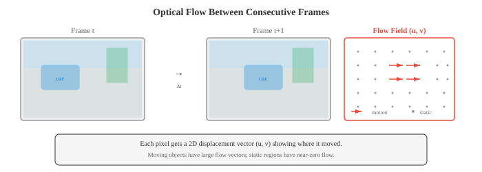

视频与 3D 视觉¶
一句话总结：把图像理解从单帧扩展到时间维度 (视频) 与空间维度 (3D)，覆盖光流、动作识别、目标跟踪、深度估计、点云、NeRF 与 3D 高斯泼溅。
视频与 3D 视觉把图像理解拓展到时间与空间两个维度。 本节涵盖光流、视频分类 (3D CNN、TimeSformer)、目标跟踪 (SORT、DeepSORT)、动作识别、深度估计 (单目与双目)、点云、NeRF 以及 3D 高斯泼溅.
-
前面 01-04 节都把图像当成孤立的快照。 但真实的视觉世界是连续的：物体在移动，场景在变化，而且深度是真实存在的。 本节把计算机视觉扩展到时间维度 (视频) 与空间维度 (3D)，讲清楚模型怎样理解运动、跟踪物体、估计深度以及重建场景。
-
视频 就是随时间采集到的一串图像 (帧). 按每秒 30 帧计算，一段 10 秒的片段包含 300 帧。 关键挑战是建模 时间维度：物体如何移动，场景如何演化，我们又如何把跨帧的信息关联起来?
-
光流 (optical flow) 估计的是两帧连续图像之间像素的表观运动。 对第 \(t\) 帧中的每个像素，光流都给出一个 2D 位移向量 \((u, v)\)，指向该像素在第 \(t+1\) 帧中移动到的位置。 结果是一张和图像同样大小的稠密运动场。

- 光流的计算基于 亮度恒定假设 (brightness constancy assumption)：像素在移动过程中亮度不变。 若第 \(t\) 帧位置 \((x, y)\) 处的像素亮度为 \(I(x, y, t)\)，且在很短的时间 \(\delta t\) 内移动了 \((u, v)\):
- 做一阶泰勒展开 (第 03 章) 并两边除以 \(\delta t\):
-
其中 \(I_x, I_y\) 是空间梯度 (Sobel，见 01 节), \(I_t\) 是时间梯度 (相邻两帧之差). 这就是 光流约束方程 (optical flow constraint equation). 一个方程两个未知数 (\(u, v\))：还需要额外约束。
-
Lucas-Kanade 假设在一个小窗口 (比如 5x5 像素) 内光流是常数。 这就得到一个超定方程组 (25 个方程，2 个未知数)，用最小二乘 (第 06 章的正规方程) 求解:
-
这个 2x2 矩阵就是 01 节里的结构张量 (Harris 角点检测用的也是同一个矩阵). Lucas-Kanade 对小运动效果好，但一旦物体在两帧之间移动超过几像素就会失效。
-
Farneback 方法 (Farneback's method) 在每个像素邻域拟合一个多项式展开，然后估计出最能解释帧间变化的位移场。 它给出的是稠密光流 (每个像素都有向量)，并且能处理比 Lucas-Kanade 更大的运动。
-
现代 深度学习光流 方法 (FlowNet、RAFT) 学着从两帧图像端到端预测光流。 RAFT (Recurrent All-Pairs Field Transforms, Teed 与 Deng, 2020) 计算两帧中所有像素对之间的 4D 相关体积，再用基于门控循环单元 (Gated Recurrent Unit, GRU) 的更新算子迭代地精修光流估计。 RAFT 精度达到 SOTA (state-of-the-art)，已成为标准的光流骨干。
-
双流网络 (two-stream networks, Simonyan 与 Zisserman, 2014) 是较早的视频理解方案。 一路处理单张 RGB 帧 (外观)，另一路处理一叠光流帧 (运动). 两路在末端融合 (求平均或拼接). 这个架构把"物体长什么样"与"物体怎么动"显式地分开。
-
3D 卷积网络 (3D Convolutional Network) 把 2D 卷积扩展到时间维度。 一次 3D 卷积用大小为 \(k \times k \times k_t\) 的滤波器同时跨越空间与时间，直接学出时空特征。
-
C3D (Tran 等，2015) 堆叠了 3x3x3 的 3D 卷积，证明时间卷积不用显式光流也能学到运动特征。 代价不小：3D 卷积的参数量与计算量都是对应 2D 卷积的 \(k_t\) 倍。
-
I3D (Inflated 3D, Carreira 与 Zisserman, 2017) 走的是更务实的路线：从一个已经预训练好的 2D CNN (比如 Inception 或 ResNet) 出发，把所有 2D 滤波器沿时间维度重复权重并除以 \(k_t\), "膨胀"成 3D 滤波器。 这样就能把 ImageNet 的预训练迁移到视频，同时增加时间建模能力。 一个 2D 的 \(k \times k\) 滤波器就变成 \(k \times k \times k_t\) 的滤波器，初始化为 \(W_{\text{3D}}[:,:,j] = W_{\text{2D}} / k_t\)，对所有时间位置 \(j\) 都成立。
-
SlowFast 网络 (Feichtenhofer 等，2019) 用两条并行通路，以不同的时间分辨率工作:
- Slow 通路 以低帧率 (比如每 16 帧取一帧) 处理输入，空间分辨率高、通道数多，捕捉精细的空间细节。
- Fast 通路 以高帧率 (每 2 帧取一帧) 处理输入，空间分辨率降低、通道数减少 (通常是 Slow 通路的 \(1/8\))，捕捉快速的时间变化。
- 横向连接通过带步长的卷积把 Fast 的信息汇入 Slow.
-
核心洞察是：空间信息与时间信息对带宽的需求不一样，物体外观变得慢，但运动可能很快。 SlowFast 从架构设计上就匹配了这种不对称。
-
TimeSformer (Bertasius 等，2021) 把视觉 Transformer (Vision Transformer, ViT) 用到视频上。 完整时空注意力的代价高得吓人 (对 \(T\) 帧、每帧 \(N\) 个 patch，复杂度是 \(O((T \times N)^2)\))，它把完整时空注意力分解为 分离式注意力 (divided attention)：每个 block 轮流做时间注意力 (每个 patch 在相同空间位置上跨时间做注意力) 与空间注意力 (每个 patch 在同一帧内跨空间做注意力). 这把代价从 \(O(T^2 N^2)\) 降到 \(O(T^2 + N^2)\).
-
VideoMAE (Tong 等，2022) 把掩码自编码器 (masked autoencoder, MAE，见 04 节) 的思路搬到视频。 它用极高的掩码比例 (90-95%)，原因是视频有很强的时间冗余：相邻帧几乎一样，就算 mask 掉绝大多数 patch，剩下的信息也够重建。 VideoMAE 在无标注视频上预训练一个 ViT 骨干，然后迁移到下游任务。
-
动作识别 (action recognition) 把一段视频片段归到某个动作类别 (比如 "跑步"、"做饭"、"弹吉他"). 它是图像分类在视频上的对应。 常见基准包括 Kinetics-400 (400 类动作，~30 万段视频)、Something-Something (174 类精细动作，要求真正的时间推理) 与 ActivityNet (200 类，长视频且未剪辑).
-
时间动作检测 (temporal action detection) 比分类更进一步：给一段未剪辑的长视频，找出每个动作的起始时间、结束时间与类别。 这是目标检测在时间维度上的对应。 ActionFormer 这类方法用 Transformer 处理时间特征并预测动作边界。
-
视频目标跟踪 (video object tracking) 在首帧确定目标之后，让它在后续帧中被持续跟踪。
-
SORT (Simple Online and Realtime Tracking, Bewley 等，2016) 把一个检测模型 (对每一帧独立地做检测) 与 卡尔曼滤波 (Kalman filter) (用于运动预测) 以及 匈牙利算法 (Hungarian algorithm) (用于匹配) 组合在一起。
-
卡尔曼滤波 为每个被跟踪的目标维护一个状态估计 (位置、速度、大小)，并用线性运动模型预测它在下一帧会在哪里。 新的检测到来时，卡尔曼滤波按各自的不确定性加权，把预测和观测结合起来更新估计。 这就是贝叶斯更新 (第 05 章) 在跟踪问题上的应用。
-
匈牙利算法 求解二部图的分配问题：给定 \(M\) 个已跟踪目标与 \(N\) 个新检测，找到使总代价最小 (代价用 03 节的 IoU 距离衡量) 的一对一匹配。 未匹配的检测开启新轨迹；未匹配的轨迹经过一段缓冲期后终止。
-
DeepSORT 在 SORT 基础上加了一个 深度外观特征 (deep appearance feature)：每个检测到的目标都过一个小型 CNN，输出一个外观嵌入 (即描述子向量). 匹配代价同时结合 IoU 距离和嵌入空间的余弦距离 (第 01 章). 这样就能处理遮挡与重识别：即便一个目标被别的物体挡住好几帧，一旦重新出现，它的外观嵌入也能让匹配重新对上。
-
ByteTrack (Zhang 等，2022) 通过利用每一个检测 (包括低置信度的那些) 来改进跟踪。 大多数跟踪器会丢掉低于置信度阈值的检测，ByteTrack 则先把高置信度检测匹配到已有轨迹，再把剩下的低置信度检测匹配到还没匹上的轨迹。 这样就能救回那些短暂被遮挡或运动模糊 (因此检测置信度低) 的目标。
-
3D 视觉 (3D vision) 要恢复被 2D 图像投影 (01 节) 丢掉的那第三个空间维度。
-
深度估计 (depth estimation) 预测的是相机到场景中每个点的距离。
-
双目深度 (stereo depth) 用两个相机，中间的距离称为基线 \(b\)，已知。 同一个点在左右两图中的水平位置不一样 (这个偏移叫 视差 (disparity) \(d\)). 深度与视差成反比:
-
其中 \(f\) 是焦距，\(b\) 是基线距离。 计算视差要在两图之间找对应点 (即立体匹配，stereo matching)，这是一个沿水平扫描线的 1D 搜索 (因为相机水平对齐，3D 中同一高度的点在两图中都落在同一行).
-
单目深度估计 (monocular depth estimation) 从单张图预测深度，从本质上是病态问题 (无穷多个 3D 场景都能投出同一张 2D 图). 但人类却可以毫不费力做到，靠的是相对大小、纹理梯度、遮挡、大气雾霾等线索。 深度网络从训练数据中学到这些线索。
-
MiDaS、Depth Anything 这类模型从单张图预测相对深度图 (即哪些物体离得更近的排序). 它们用尺度不变损失在多样化数据集上训练，尽管理论上有歧义，依然能给出非常准确的结果。
-
点云 (point clouds) 是一组 3D 点 \((x, y, z)\)，可以带颜色或其他属性，由激光雷达 (Light Detection and Ranging, LiDAR) 传感器或双目重建得到。 与图像不同，点云是无序的、间距不规则的。
-
PointNet (Qi 等，2017) 直接处理点云：对每个点独立地应用共享的多层感知机 (Multi-Layer Perceptron, MLP)，然后用最大池化聚合 (最大池化对置换不变，从而解决顺序问题). PointNet++ 加了分层分组，在多个尺度上捕捉局部结构。
-
神经辐射场 (Neural Radiance Field, NeRF, Mildenhall 等，2020) 把一个 3D 场景表示成一个连续函数，从 3D 位置 \((x, y, z)\) 与观察方向 \((\theta, \phi)\) 映射到颜色 \((r, g, b)\) 与密度 \(\sigma\). 这个函数由一个 MLP 参数化:
- 渲染一个像素时，从相机出发，穿过该像素朝场景发射一条射线。 沿射线采样若干点，MLP 在每个点上预测颜色与密度。 像素颜色由 体渲染 (volume rendering) 得到：沿射线对颜色以密度加权做积分:
- 其中 \(T(t) = \exp(-\int_{t_n}^{t} \sigma(\mathbf{r}(s)) \, ds)\) 是累计透过率 (到当前位置为止，光被吸收了多少). 实践中，这个积分通过沿射线采样 \(N\) 个点求和来近似:
-
NeRF 的训练目标是最小化渲染像素与一组带位姿的照片之间真实像素的 均方误差 (Mean Squared Error, MSE). 训练完之后，NeRF 就能从任意相机位置渲染出照片级的新视角。 局限是速度：渲染需要对 MLP 求值上百万次 (每条射线上每个采样点都要一次)，实时渲染很难。
-
3D 高斯泼溅 (3D Gaussian Splatting, Kerbl 等，2023) 用一堆 3D 高斯原语替代连续的体函数来表示场景，解决了 NeRF 的速度问题。 每个高斯有一个 3D 位置 (均值)、一个 3D 协方差矩阵 (控制形状与方向)、不透明度以及颜色 (用球谐函数表示，从而支持视角相关效果).
-
渲染时先把每个 3D 高斯投影到图像平面 (得到 2D 的高斯 "泼点")，按深度排序，然后用 alpha blending 从前到后合成。 这是一个可以在 GPU 上实时跑的光栅化过程 (100+ FPS)，比 NeRF 的射线步进快好几个数量级。 高斯泼溅在质量上追平甚至超过 NeRF，又能实时渲染。
-
SLAM (Simultaneous Localisation and Mapping，同步定位与建图) 要在探索未知环境的同时，一边构建这个环境的地图，一边跟踪相机在图中的位置。 它是机器人、自动驾驶、增强现实的核心问题。
-
视觉里程计 (visual odometry) 通过跨帧跟踪特征来估计相机的运动。 特征点 (SIFT、ORB，见 01 节) 在相邻帧之间做匹配，再用 本质矩阵 (essential matrix) (它编码了两个视图之间的几何关系，由 01 节的内参与外参推出) 从对应关系估计相机的旋转和平移。
-
基于特征的 SLAM (feature-based SLAM) 在视觉里程计之上维护一张持久的地图。 ORB-SLAM (Mur-Artal 等，2015) 是应用最广的基于特征的 SLAM 系统。 它有三个并行线程:
- 跟踪 (Tracking)：把每一新帧中的 ORB 特征匹配到地图，用 PnP (Perspective-n-Point，透视 n 点) 与 RANSAC (Random Sample Consensus，随机抽样一致) 估计相机位姿
- 局部建图 (Local mapping)：从匹配好的特征三角化出新的地图点，用光束平差 (bundle adjustment，最小化所有观测到该点的视图的重投影误差) 优化它们的位置
- 闭环检测 (Loop closure)：用视觉词袋 (bag-of-visual-words) 检测相机是否回到了之前建过图的区域，然后通过全局优化地图来修正累积的漂移
-
激光雷达 SLAM (LiDAR SLAM) 用激光雷达传感器给出的 3D 点云代替相机图像 (或与之结合). LiDAR 直接提供深度测量，让几何估计更稳健，但硬件成本更高。 LOAM (LiDAR Odometry and Mapping，激光雷达里程计与建图) 这类方法用迭代最近点 (Iterative Closest Point, ICP) 对齐相邻扫描的点云。
-
视觉-惯性 SLAM (Visual-Inertial SLAM) 把相机数据与 惯性测量单元 (Inertial Measurement Unit, IMU，加速度计 + 陀螺仪) 的测量结果融合。 IMU 给出高频的旋转与加速度估计，填补相机帧之间的空隙，同时应对快速运动或视觉特征暂时丢失的情况。
-
VR/AR (虚拟现实 / 增强现实，Virtual Reality / Augmented Reality) 应用是对计算机视觉要求最苛刻的场景之一。
-
姿态估计 (pose estimation) 从图像中确定人体 (或人脸、手部) 的位置与朝向。 身体姿态 (body pose) 通常表示为一组 2D 或 3D 关键点位置 (肩、肘、腕、髋、膝、踝这些关节). OpenPose、MediaPipe 这类模型用热图回归预测这些关键点：对每个关节，模型输出一张热图，峰值处就是关节的位置。
-
自上而下 (top-down) 方法先用边界框检测器 (03 节) 检测出人，再在每个框内估计姿态。 自下而上 (bottom-up) 方法则先在图中检测所有关键点，再用部件亲和域 (part affinity fields，编码相连关节之间关联的向量场) 把它们组合成一个个个体。
-
场景重建 (scene reconstruction) 从传感器数据构建环境的 3D 模型。 在 AR 中，这让虚拟物体能放在真实表面上、被真实物体遮挡、投出虚拟的阴影成为可能。 ARKit、ARCore 里基于深度传感器的实时场景重建方法，会随着用户的移动不断更新一张环境的稀疏网格。
-
实时渲染 (real-time rendering) 在 VR 里的约束极端严格：双眼各自独立渲染，帧率 90 FPS 以上 (否则会晕动症)，从头动到显示更新的端到端延迟要低于 20 毫秒。 注视点渲染 (foveated rendering，靠眼动追踪只在用户注视的位置高分辨率渲染) 与 重投影 (reprojection，用最新的头部位姿把上一帧扭曲以填补下一帧渲染完之前的空隙) 这类技术是在这种约束下必不可少的。
-
实时神经渲染 (3D 高斯泼溅)、稳健跟踪 (视觉-惯性 SLAM) 与高效姿态估计的融合，正让照片级、可交互的 AR/VR 体验越来越触手可及。
Coding Tasks (use CoLab or notebook)¶
-
从零实现 Lucas-Kanade 光流算法。 在两张合成帧之间计算光流，其中一个正方形向右移动。
import jax.numpy as jnp import matplotlib.pyplot as plt def lucas_kanade(frame1, frame2, window_size=5): """Lucas-Kanade 光流.""" # 计算梯度 Ix = jnp.zeros_like(frame1) Iy = jnp.zeros_like(frame1) It = frame2 - frame1 # Sobel 风格的梯度 Ix = Ix.at[1:-1, :].set((frame1[2:, :] - frame1[:-2, :]) / 2) Iy = Iy.at[:, 1:-1].set((frame1[:, 2:] - frame1[:, :-2]) / 2) H, W = frame1.shape half_w = window_size // 2 u = jnp.zeros_like(frame1) v = jnp.zeros_like(frame1) for i in range(half_w, H - half_w): for j in range(half_w, W - half_w): Ix_win = Ix[i-half_w:i+half_w+1, j-half_w:j+half_w+1].ravel() Iy_win = Iy[i-half_w:i+half_w+1, j-half_w:j+half_w+1].ravel() It_win = It[i-half_w:i+half_w+1, j-half_w:j+half_w+1].ravel() A = jnp.stack([Ix_win, Iy_win], axis=1) ATA = A.T @ A ATb = -A.T @ It_win # 检查方程组是否良态 det = ATA[0,0] * ATA[1,1] - ATA[0,1] * ATA[1,0] if jnp.abs(det) > 1e-6: flow = jnp.linalg.solve(ATA, ATb) u = u.at[i, j].set(flow[0]) v = v.at[i, j].set(flow[1]) return u, v # 构造两帧: 一个白色方块向右平移 frame1 = jnp.zeros((64, 64)) frame1 = frame1.at[20:40, 15:35].set(1.0) frame2 = jnp.zeros((64, 64)) frame2 = frame2.at[20:40, 20:40].set(1.0) # 向右平移 5 像素 u, v = lucas_kanade(frame1, frame2, window_size=7) # 可视化 fig, axes = plt.subplots(1, 3, figsize=(14, 4)) axes[0].imshow(frame1, cmap='gray'); axes[0].set_title('Frame 1'); axes[0].axis('off') axes[1].imshow(frame2, cmap='gray'); axes[1].set_title('Frame 2'); axes[1].axis('off') # 光流的箭头图 (下采样便于观察) step = 4 Y, X = jnp.mgrid[0:64:step, 0:64:step] axes[2].imshow(frame1, cmap='gray', alpha=0.5) axes[2].quiver(X, Y, u[::step, ::step], v[::step, ::step], color='#e74c3c', scale=50, width=0.005) axes[2].set_title('Optical Flow'); axes[2].axis('off') plt.tight_layout(); plt.show() # 检查移动区域的平均光流 region_u = u[20:40, 15:35] print(f"Average horizontal flow in object region: {region_u[region_u != 0].mean():.2f} pixels") -
实现一个简单的 2D 目标跟踪卡尔曼滤波。 模拟一条带噪声的轨迹，展示卡尔曼滤波如何平滑估计。
import jax import jax.numpy as jnp import matplotlib.pyplot as plt def kalman_predict(x, P, F, Q): """卡尔曼滤波预测步.""" x_pred = F @ x P_pred = F @ P @ F.T + Q return x_pred, P_pred def kalman_update(x_pred, P_pred, z, H, R): """卡尔曼滤波更新步.""" y = z - H @ x_pred # 新息 (innovation) S = H @ P_pred @ H.T + R # 新息协方差 K = P_pred @ H.T @ jnp.linalg.inv(S) # 卡尔曼增益 x_updated = x_pred + K @ y P_updated = (jnp.eye(len(x_pred)) - K @ H) @ P_pred return x_updated, P_updated # 状态: [x, y, vx, vy] dt = 1.0 F = jnp.array([[1, 0, dt, 0], # 状态转移 [0, 1, 0, dt], [0, 0, 1, 0], [0, 0, 0, 1]]) H = jnp.array([[1, 0, 0, 0], # 观测: 测量 x, y [0, 1, 0, 0]]) Q = jnp.eye(4) * 0.01 # 过程噪声 R = jnp.eye(2) * 4.0 # 测量噪声 (含噪检测器) # 模拟真值: 圆周运动 n_steps = 50 t = jnp.linspace(0, 2 * jnp.pi, n_steps) true_x = 10 * jnp.cos(t) + 20 true_y = 10 * jnp.sin(t) + 20 # 含噪观测 key = jax.random.PRNGKey(42) noise = jax.random.normal(key, (n_steps, 2)) * 2.0 obs_x = true_x + noise[:, 0] obs_y = true_y + noise[:, 1] # 运行卡尔曼滤波 x = jnp.array([obs_x[0], obs_y[0], 0.0, 0.0]) # 初始状态 P = jnp.eye(4) * 10.0 # 初始不确定性 kalman_x, kalman_y = [], [] for i in range(n_steps): x, P = kalman_predict(x, P, F, Q) z = jnp.array([obs_x[i], obs_y[i]]) x, P = kalman_update(x, P, z, H, R) kalman_x.append(x[0]) kalman_y.append(x[1]) kalman_x = jnp.array(kalman_x) kalman_y = jnp.array(kalman_y) # 可视化 plt.figure(figsize=(8, 8)) plt.plot(true_x, true_y, 'k-', linewidth=2, label='Ground Truth') plt.scatter(obs_x, obs_y, c='#e74c3c', s=20, alpha=0.5, label='Noisy Observations') plt.plot(kalman_x, kalman_y, '#3498db', linewidth=2, label='Kalman Filter') plt.legend(); plt.grid(alpha=0.3) plt.title('Kalman Filter Tracking') plt.xlabel('x'); plt.ylabel('y') plt.axis('equal'); plt.show() obs_error = jnp.mean(jnp.sqrt((obs_x - true_x)**2 + (obs_y - true_y)**2)) kalman_error = jnp.mean(jnp.sqrt((kalman_x - true_x)**2 + (kalman_y - true_y)**2)) print(f"Observation RMSE: {obs_error:.2f}") print(f"Kalman filter RMSE: {kalman_error:.2f}") print(f"Error reduction: {(1 - kalman_error/obs_error) * 100:.1f}%") -
实现一个简化版 NeRF 风格的体渲染流程。 让射线穿过一个简单 3D 场景 (若干已知颜色与密度的球)，沿每条射线做积分，渲染出一张图。
import jax import jax.numpy as jnp import matplotlib.pyplot as plt def render_ray(origin, direction, spheres, n_samples=64, t_near=1.0, t_far=6.0): """对一条射线做体渲染, 场景由若干球体组成.""" t_vals = jnp.linspace(t_near, t_far, n_samples) deltas = jnp.concatenate([jnp.diff(t_vals), jnp.array([1e-3])]) colour = jnp.zeros(3) transmittance = 1.0 for i in range(n_samples): point = origin + t_vals[i] * direction # 计算该点的密度与颜色 density = 0.0 point_colour = jnp.zeros(3) for center, radius, col, sigma in spheres: dist = jnp.linalg.norm(point - center) # 软球: 密度随到表面的距离衰减 d = jnp.exp(-jnp.maximum(0, dist - radius) * sigma) * sigma density += d point_colour += d * jnp.array(col) # 用总密度归一化颜色 point_colour = jnp.where(density > 1e-6, point_colour / density, point_colour) # 体渲染方程 alpha = 1.0 - jnp.exp(-density * deltas[i]) colour += transmittance * alpha * point_colour transmittance *= (1.0 - alpha) return colour # 场景: 三个彩色球 spheres = [ (jnp.array([0.0, 0.0, 4.0]), 0.8, [1.0, 0.2, 0.2], 5.0), # 红 (jnp.array([1.5, 0.5, 5.0]), 0.6, [0.2, 1.0, 0.2], 5.0), # 绿 (jnp.array([-1.0, -0.5, 3.5]), 0.5, [0.2, 0.2, 1.0], 5.0), # 蓝 ] # 相机设置 img_h, img_w = 64, 64 focal = 60.0 origin = jnp.array([0.0, 0.0, 0.0]) image = jnp.zeros((img_h, img_w, 3)) for i in range(img_h): for j in range(img_w): # 计算射线方向 px = (j - img_w / 2) / focal py = -(i - img_h / 2) / focal direction = jnp.array([px, py, 1.0]) direction = direction / jnp.linalg.norm(direction) colour = render_ray(origin, direction, spheres) image = image.at[i, j].set(jnp.clip(colour, 0, 1)) plt.figure(figsize=(6, 6)) plt.imshow(image) plt.title('NeRF-style Volume Rendering\n(3 spheres)') plt.axis('off') plt.tight_layout(); plt.show() print(f"Image shape: {image.shape}") print(f"Rendered {img_h * img_w} rays with 64 samples each")
📌 本节要点¶
- 光流：用亮度恒定假设求解像素级 2D 位移场，经典解法 Lucas-Kanade / Farneback，现代端到端解法 FlowNet / RAFT.
- 视频建模三大范式：双流网络 (RGB + 光流)、3D 卷积 (C3D / I3D / SlowFast)、视频 Transformer (TimeSformer / VideoMAE).
- SlowFast：用低帧率高分辨率的 Slow 通路 + 高帧率低分辨率的 Fast 通路，匹配空间与时间不同的带宽需求。
- 多目标跟踪: SORT = 检测 + 卡尔曼滤波 + 匈牙利匹配；DeepSORT 加外观嵌入解遮挡；ByteTrack 复用低置信度检测。
- 双目深度：由视差 \(d\) 与基线 \(b\) 推深度 \(Z = fb/d\)；单目深度是病态问题，靠数据学到的经验线索解决。
- 点云：无序、稀疏、不规则的 3D 数据，PointNet 用共享 MLP + 最大池化实现置换不变。
- NeRF：用 MLP 隐式表示 \((位置, 视角) \to (颜色, 密度)\)，通过沿射线的体渲染合成新视角，但渲染慢。
- 3D 高斯泼溅：用一堆 3D 高斯原语替代连续函数，GPU 光栅化实时渲染，质量追平 NeRF.
- SLAM：同步定位与建图，特征法代表 ORB-SLAM (跟踪 / 局部建图 / 闭环三线程)；传感器可结合 LiDAR 与 IMU.
- AR/VR 约束：双眼 90+ FPS、端到端延迟 <20 ms，靠注视点渲染 + 重投影凑齐，是计算机视觉最严苛的部署场景。